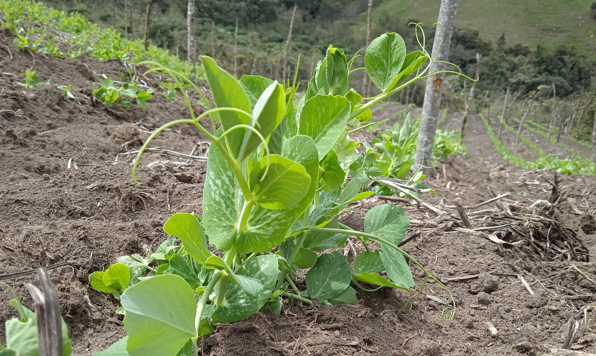
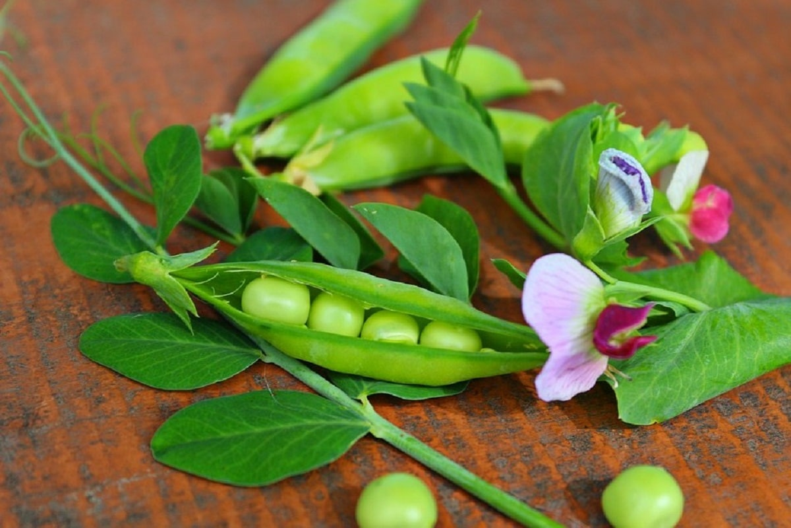

Aplicación móvil orientada al mejoramiento de la valoración del producto agrícola y la toma de decisiones en la comercialización.
¿Que es AgroLibreta?
¿De donde surge nuestra idea? y Algunos aspectos más...
Objetivos
Objetivo general
- Desarrollar una aplicación móvil que sirva de sistema de costeo para pequeños productores agrícolas,soportada con un sitio web,orientada al mejoramiento de la valoración del producto y la toma de decisiones en la comercialización, usando tecnologías de libre distribución y la metodología de prototipado. Caso: cultivo de arveja en la vereda el Aventino, municipio de Mutiscua, departamento Norte de Santander.
Objetivos específicos
- Desarrollar una aplicación móvil según la metodología de prototipado, que sea operable en dispositivos móviles Android.
- Desarrollar un sitio web para la gestión de usuarios, copias de seguridad, instalación y reinstalación del aplicativo móvil.
- Generar una experiencia con al menos tres usuarios para la evaluación del funcionamiento de la aplicación web y móvil.
Primeros pasos para utilizar AgroLibreta
Algunas definiciones...

Clasificación de los costos
- Para el uso correcto y obtener el máximo provecho de la aplicación es importante que reconozca algunas definiciones una de ellas es los conceptos, un concepto dentro de la aplicación representa una clasificación de costos, estos están agrupados en 8 conceptos fijos, que son: semilla, abono y fertilizantes, plaguicidas y herbicidas, materiales y empaques, maquinaria, mano de obra, transporte y otros.

Modelo de referencia
- A cada grupo de costos (conceptos) se le asigna un valor porcentual este valor representa la forma en que se distribuye el presupuesto para el cultivo, por ejemplo, si el presupuesto es de un millón de pesos y al concepto mano de obra se asigna un porcentaje del 50%, quiere decir que sus costos reales en mano de obra no deberían sobrepasar el 50% del presupuesto, en nuestro ejemplo la mano de obra no le debe costar más de 500 mil pesos.

Otros
- Para asegurar su información nunca olvide crear una copia de seguridad de sus datos, lo puede hacer en su perfil de usuario ingresando en el icono ubicado en la parte superior derecha del home (donde aparecen los cultivos) y presionado el botón 'Sincronizar datos', es necesario que tenga conexión a internet.
- Tenga en cuenta que los registros fotográficos y los PDF generados no se incluyen en la copia de seguridad, esto será de manera temporal mientras se implementa dicha funcionalidad.
- Para actualizar la información debe deslizar el dedo hacia abajo en la pantalla hasta que la vista suba al máximo y aparezca un círculo giratorio
- Agregue solo los productos o actividades que vaya a utilizar ya que no se pueden eliminar al igual que las unidades de medida, disculpe las molestias esperamos implementar dicha funcionalidad en futuras versiones.